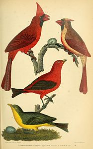
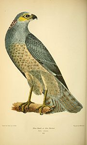
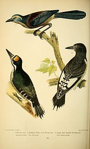
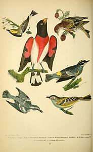
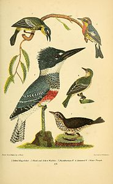

Books(著作)
Alexander wrote some books and poetry, mostly about birds.(アレクサンダーは、主に鳥についての本や詩をいくつか書いています。)
Book of Natural Science(自然科学の書籍)- American Organization. Neun Bände. Bradford and Inskeep, Philadelphia 1808-1814.
- (アメリカの鳥類学。 NeunBände。 BradfordとInskeep、フィラデルフィア1808–1814。)
- Poems. J. Neilson, Paisley 1790.
- (詩J. Neilson、Paisley 1790。)
- Poems, Humorous, Satirical, and Serious. 2. Auflage. P. Hill, Edinburgh 1791.
- (詩、ユーモラス、風刺的、そして真面目。オーフラージュ。 P.ヒル、エジンバラ1791。)
- Poems Chiefly in the Scottish Dialect by Alexander Wilson with an Account of His Life and Writings. J. Neilson, Paisley 1816.
- (主にスコットランド方言のアレクサンドル・ウィルソンによる生涯と著作の記述を伴う詩。 J. Neilson、Paisley 1816。)
- The Poetical Works of Alexander Wilson. J. Henderson, Belfast 1844.
- (アレクサンダー・ウィルソンの詩作品。 J.ヘンダーソン、ベルファスト1844。)
- The Poems and Literary Prose of Alexander Wilson. Ed. Rev. Alexander Balloch Grosart . 2 Bd. Alexander Gardner, Paisley 1876.
- (アレクサンドル・ウィルソンの詩と文学散文。編牧師アレクサンダーバロックグロサール。 2紀元前。アレクサンダーガードナー、ペイズリー1876年。)
There are pictures of birds in somes of his books too. They are pretty good looking birds. I like how the second bird looks most.(彼の本のいくつかに鳥の写真もあります。彼らはかなり格好良い鳥です。二羽目の鳥の姿が一番好きです。)
|  |  |  |  |  |
|---|